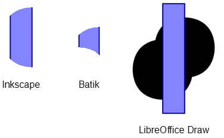

In order to restrict the area where drawing commands lead to visible results, SVG allows the definition of clipping paths. A clipping path is a set of closed vector path that may consist of an arbitrary number of straight and curved segments. The region(s) enclosed by the path define(s) the visible area, i.e. after applying a clipping path, only those portions of the subsequently drawn graphics that fall inside the enclosed area are visible, everything else is cut away. The outline of the clipping paths itself is invisible of course and only shown in the following examples:

<!-- define triangular clipping path -->
<clipPath id='clip1'>
<path d='M0 0H30V-50Z'/>
</clipPath>
<!-- draw clipped circle -->
<circle clip-path="url('#clip1')" cx="35" cy="-35" r="30"
fill="#8080ff" stroke="#000080"/>If the triangular clipping path is applied to the blue shape, we get the result on the right. Most SVG renderers/viewers I tested so far support this kind of clipping so that the result is displayed correctly.
Besides defining the clipping path explicitly as shown above, it’s also possible to tell the SVG renderer to compute the intersection of two clipping paths and to restrict the subsequent drawing actions to the resulting area. In the following example, the intersection of the two circular paths leads to a rotated lens-shaped region which defines the actual clipping path:

<!-- define circular clipping path -->
<clipPath id="clip1">
<circle cx="25" cy="-25" r="15"/>
</clipPath>
<!-- define lens-shaped clipping path by intersecting
the first circle with another one -->
<clipPath id="clip2" clip-path="url('#clip1')">
<circle cx="35" cy="-35" r="15"/>
</clipPath>If we now assign this clipping path to the following blue rectangle, the result should look as follows:

<!-- define circular clipping path -->
<clipPath id="clip1">
<circle cx="25" cy="-25" r="15"/>
</clipPath>
<!-- define lens-shaped clipping path by intersecting
the first circle with another one -->
<clipPath id="clip2" clip-path="url('#clip1')">
<circle cx="35" cy="-35" r="15"/>
</clipPath>
<!-- draw clipped rectangle -->
<rect clip-path="url('#clip2')" x="25" y="-60" width="10"
height="60" fill="#8080ff" stroke="#000080"/>Fortunately, the latest releases of most web browsers handle the intersections of clipping paths correctly. However, some SVG renders/viewers don’t compute them as expected and display wrong results. The following figure shows the images created by three different applications:

As of version 1.8 dvisvgm provides the command-line option --clipjoin which tells the utility to compute the
shape of intersecting clipping paths directly and not to delegate this task to the SVG renderer. The resulting
SVG files should be more portable.
The following images illustrate the effect of the option in a more complex context created from this TikZ example and rendered by Inkscape.
Both SVG files were created from the same DVI file, the first one without and the second one with option --clipjoin:

{kind=link}